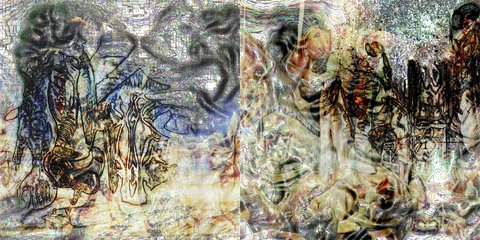

by Hulki Okan Tabak · Async Art Master #2093 · day/night · time rule: UTC
Updates twice a day to reflect day / night cycles.

Day 06:00–18:59 · Night 19:00–05:59 (UTC)
The full-size files live on IPFS; each is linked on three public gateways, in the order to try them (gateway.pinata.cloud, ipfs.io, dweb.link). Every line says what our own check found: 3 our own copy, pinned here and verified on upload, 3 not pinned by us yet.
bafybeicel25mj… gateway.pinata.cloud · ipfs.io · dweb.link — our own copy, pinned here and verified on upload, checked 2026-09-22bafybeigyrmkhk… gateway.pinata.cloud · ipfs.io · dweb.link — our own copy, pinned here and verified on upload, checked 2026-09-22bafybeicotdxel… gateway.pinata.cloud · ipfs.io · dweb.link — our own copy, pinned here and verified on upload, checked 2026-09-22QmT76LQy3qn5na… gateway.pinata.cloud · ipfs.io · dweb.link — not pinned by us yet, checked 2026-09-23 09:13QmbqcVR9hpDJYZ… gateway.pinata.cloud · ipfs.io · dweb.link — not pinned by us yet, checked 2026-09-23 09:13QmbqcVR9hpDJYZ… gateway.pinata.cloud · ipfs.io · dweb.link — not pinned by us yet, checked 2026-09-23 09:13QmSxM36mdygTY9… gateway.pinata.cloud · ipfs.io · dweb.link — not pinned by us yet, checked 2026-09-23 09:13"...So, like a sentinel, he could not sleep. The night was full of wrong, Earthquakes and executions. Soon he would be dead, And still all over Europe stood the horrible nurses Itching to boil their children. Only his verses Perhaps could stop them: He must go on working: Overhead The uncomplaining stars composed their lucid song." --from the poem Voltaire at Ferney by W.H. Auden Mind Sketch II is the second of the mind sketches. Cerebral looking emotionally involved pieces of personal expression bullshit confusion love lost thoughts and experimentation. Purposefully quoting Auden whom I admire, specifically focusing on Voltaire for some reason or another. Mind Sketch II consists of two…
async.art · OpenSea · Etherscan
Generated archive pages. Content identifiers point to the public IPFS network.